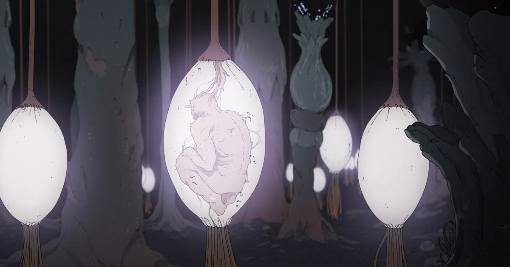
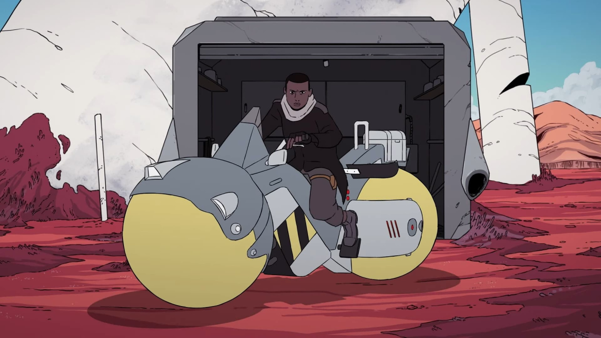
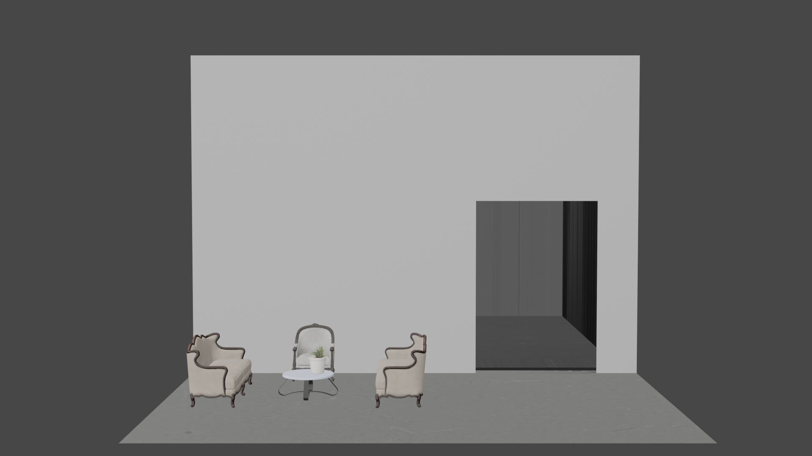
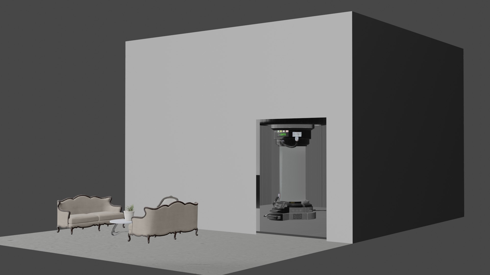
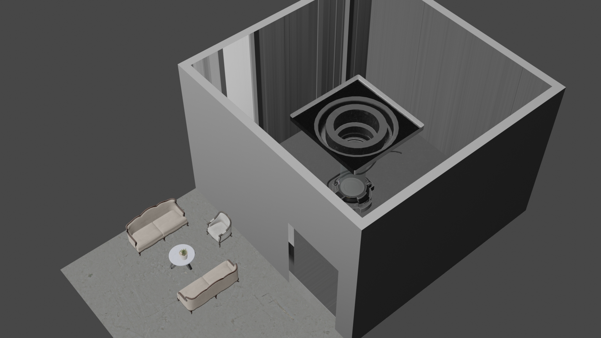
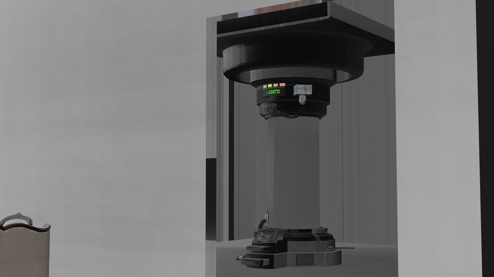

The central concept of my 2D matrix is discussing immortality and hierarchy. Every resource will be limited in the future, and everything needs access. Most of the resources are in the hands of a small group of super-powerful people. And only that tiny amount of people have the right to get "eternal life." I will use blender to design a device that can help those people have eternal life. The device will extract your blood through a needle, get your DNA, and produce a body precisely like you. Then, after your body perishes, you can eject all the memories inside the cloned body that will give you eternal life.
Scavengers Reign is an American animated series. The series follows the survivors of the damaged interstellar cargo ship Demeter 227 who are stranded on Vesta, an alien planet bustling with flora and fauna but filled with dangers. Inside the show, there are full of sci-fi flora and fauna, and a lot of ultra-futuristic mechanical designs, I think I can reference some of the designs in there.  
I used blender to create a chamber for the noble to clone their bodies to have eternal life: The patients first will be waited in the waiting room, and then after the doctor calls them, they are allowed to enter the room with the chamber to clone their bodies. I also recorded the video of the building process for my documentation.
   